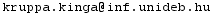

About
As an extension to our research paper, here we show a comparison between recent skinning methods, while we provide a new techinque that offers solution to their disadvantages.
In the following, we compare Kunkli's [1], and Bastl's [2] skinning techinque with ours.
To fully notice the differences between the methods, please watch the videos in full screen and in HD.
Comparing with Bastl's method
Changing the positions of the touching points
Touching points getting inside the circles
Suddenly changing tangent lengths
Comparing with Kunkli's method
[1] R. Kunkli, M. Hoffmann, Skinning of circles and spheres, Computer Aided Geometric Design 27 (8) (2010) 611–621.
doi:10.1016/j.cagd.2010.07. 003.
[2] B. Bastl, J. Kosinka, M. Lavicka, Simple and branched skins of systems of circles and convex shapes, Graphical Models 78 (2015) 1–9.
doi:10.1016/ j.gmod.2014.12.001.
Copyright © 2018 || Contact: Kinga Kruppa -- 